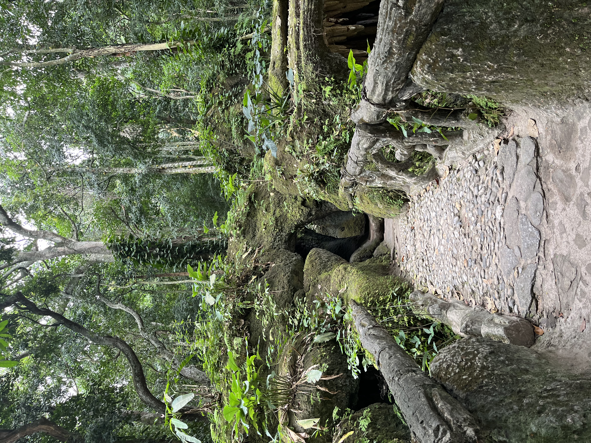

Jardín Botánico

El Jardín Botánico de Río de Janeiro fue fundado en 1808 por orden del rey Don João VI, y hoy reúne más de 8.000 especies de plantas en pleno centro de la ciudad.
Uno de sus rincones más fotografiados es la Avenida de las Palmeras Imperiales, una hilera de palmeras centenarias que le da nombre al barrio que lo rodea.
← Volver a la página principal